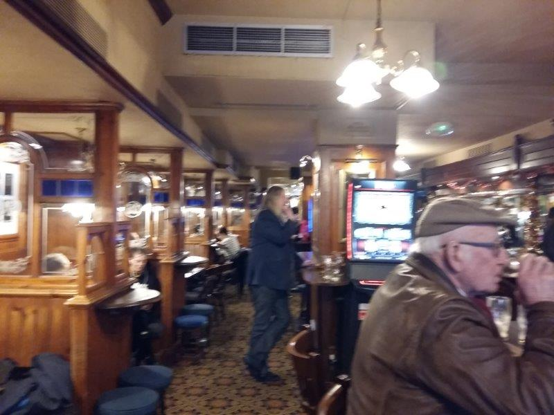

JIMMY BOOZERS' PHOTOS

×

Today is special. When I mention the dirty boozers idea to people more often than not I am told about the Beehive in Brixton. Scandalous tales of treacherous debauchery. A belter of a pub. A must see. The dilemma I have though is that the Beehive is a Wetherspoons and spoons are generally off the standard DB list. On this occasion though, given the notoriety, an exception has been made. I am not disappointed. Its half one on a Sunday afternoon. Optimal time for dirty boozing. As I walk in I am met by a man with tattoos everywhere, and I mean everywhere. Face green with ink. Big man looks like a lizard guy. Give him a nod and he nods back. Acceptance. I'm in. Get to the bar and order a pint. Fuck me it's cheap... £1.99 a lager (Bud Light). £3.90 a Guinness. You can actually get a burger and a pint in here for 5.99. For London that is phenomenal. Pint's not the best but £1.99 so no complaints. Problem is that it's bud light. Tastes like water. There is a warm yet chilled environment. Friendly. I could get comfortable here. A row of lads fill the window area in their regular seats. Boozing. Sat on their own yet together in unison, united in community. Reflecting. This is their place of comfort. Their solace. I recognise one punter from a boozer in Streatham Hill. Think he has had his teeth fixed. Got a walking stick now though. Big man at the fixed odds puggy with wads of cash. His finger must be getting sore now from all the button bashing. Think he might be laundering money, satisfied with the guaranteed 79% pay out the machine offers back in clean cash. I park myself down in a seat near him and observe. There's a telly on but Songs Of Praise is on, not the football. Perhaps more people need salvation than the Brighton and Hove Albion game. In truth Spoons never show football, so don't come here expecting to catch it. Instead expect theatre. Brixton has a bit of an edge about it. Some history. But it's significantly gentrified now making it tough for the locals. This pub is decent though and there is a quality mix inside. Young, old, black, white, male, female. They know what it's all about. They get it. As I'm sat I listen in. I really enjoy listening to people. More so in these sorts of places. You learn so much. About history. About life. About love. Summary Spoons are undervalued. There is a snobbery that overwhelmes some people that feel better than it. They don't see the community importance of it. Affordable for all. Comfort.
Bevvie Value - 5/5
Football Viewing Arrangements - 0/5
Fellow Clientele - 4/5
Banter & Vibe - 3/5
407-409 Brixton Rd, Brixton, LONDON, SW9 7DG, UK